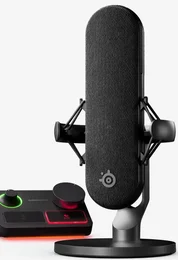
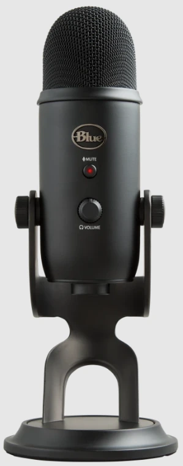
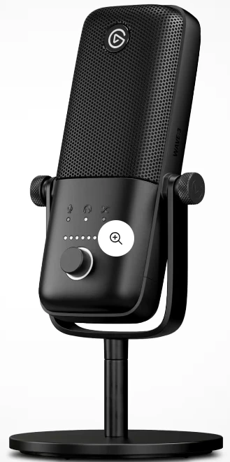
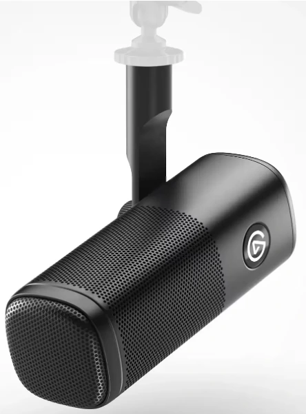
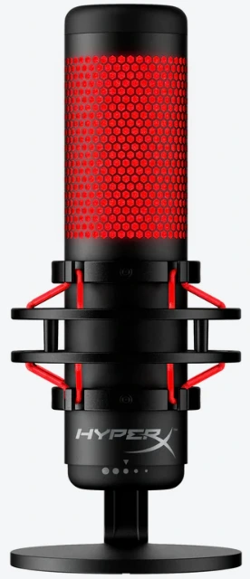
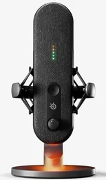
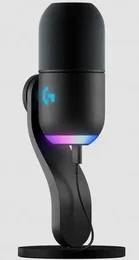
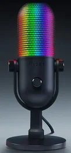
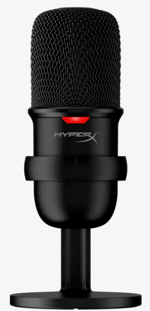
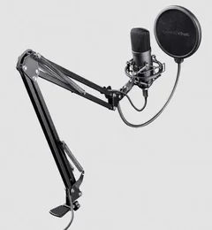

🛡️ Recomendaciones reales desde 2020
⭐ Análisis imparciales por expertos
🔝 Lo probamos por ti para que elijas lo mejor
🛡️ Recomendaciones reales desde 2020
⭐ Análisis imparciales por expertos
🔝 Lo probamos por ti para que elijas lo mejor

Contenido actualizado en junio de 2025
Soy Carlos López, analista tecnológico con más de 15 años de experiencia en productos de audio y herramientas para creadores de contenido. En esta guía te muestro los mejores micrófonos para podcast, streaming y gaming de 2025, seleccionados tras pruebas reales. Aquí no hay publicidad disfrazada: solo opiniones imparciales basadas en pruebas técnicas, comparativas claras y recomendaciones directas según tu presupuesto y nivel.
| Imagen | Modelo | Lo mejor | A tener en cuenta | Comprar |
|---|---|---|---|---|
|  | SteelSeries Alias Pro Kit | 🎙 Calidad de estudio XLR + interfaz incluida 🔧 Control completo 🔊 Sonido cálido 🖥 Ideal para setups avanzados | 📐 Requiere espacio, 💰 Inversión superior | Ver en Amazon |
|  | Logitech for Creators Blue Yeti | 🔌 USB plug & play 🎛 Controles físicos 🔁 Múltiples patrones 🎙 Sonido versátil | 📏 Tamaño algo voluminoso | Ver en Amazon |
|  | Elgato Wave:3 | 🧠 Anti-clipping automático 🎚 Mezclador digital 🔊 Sonido nítido 🧩 Integración con Wave Link | ⚙️ Software recomendado para sacarle partido | Ver en Amazon |
|  | Elgato Wave DX | 🔇 Rechaza ruido ambiental 🎙 Sonido profesional 🧱 Diseño robusto 🔗 Conexión XLR | 🎛 Requiere interfaz de audio externa | Ver en Amazon |
|  | HyperX QuadCast | 🌈 Iluminación LED 🔄 4 patrones 🎛 Ganancia accesible 🎤 Calidad muy estable | 📐 Algo voluminoso en escritorios pequeños | Ver en Amazon |
|  | SteelSeries Alias | 🧑🏫 Voz clara 🔌 USB-C moderno 🧘 Fácil de configurar 💼 Diseño sobrio | 🎚 Controles básicos pero suficientes | Ver en Amazon |
|  | Logitech G Yeti GX | 🧼 Cancelación activa 🖱 Control físico de volumen 🔌 USB-C 🎧 Sonido limpio | 🎮 Optimizado para uso individual | Ver en Amazon |
|  | Razer Seiren V3 Chroma | 🌈 RGB dinámico 🤌 Mute táctil 🎧 Captación clara 🎮 Estética gaming cuidada | 🎨 Más visual que técnico | Ver en Amazon |
|  | HyperX SoloCast | 🔌 Conexión instantánea 📦 Compacto 🎤 Audio nítido 🖱 Mute con un toque | 📉 Funcionalidad básica (sin control de ganancia) | Ver en Amazon |
|  | Trust Gaming GXT 252 Emita Plus | 📦 Pack completo 🎙 Captación decente 🔧 Fácil de montar 💰 Buen precio | 🔈 Rendimiento correcto para empezar | Ver en Amazon |
Lo mejor: 🎙 Calidad de estudio XLR + interfaz incluida 🔧 Control completo 🔊 Sonido cálido 🖥 Ideal para setups avanzados
A tener en cuenta: 📐 Requiere espacio, 💰 Inversión superior
Lo mejor: 🔌 USB plug & play 🎛 Controles físicos 🔁 Múltiples patrones 🎙 Sonido versátil
A tener en cuenta: 📏 Tamaño algo voluminoso
Lo mejor: 🧠 Anti-clipping automático 🎚 Mezclador digital 🔊 Sonido nítido 🧩 Integración con Wave Link
A tener en cuenta: ⚙️ Software recomendado para sacarle partido
Lo mejor: 🔇 Rechaza ruido ambiental 🎙 Sonido profesional 🧱 Diseño robusto 🔗 Conexión XLR
A tener en cuenta: 🎛 Requiere interfaz de audio externa
Lo mejor: 🌈 Iluminación LED 🔄 4 patrones 🎛 Ganancia accesible 🎤 Calidad muy estable
A tener en cuenta: 📐 Algo voluminoso en escritorios pequeños
Lo mejor: 🧑🏫 Voz clara 🔌 USB-C moderno 🧘 Fácil de configurar 💼 Diseño sobrio
A tener en cuenta: 🎚 Controles básicos pero suficientes
Lo mejor: 🧼 Cancelación activa 🖱 Control físico de volumen 🔌 USB-C 🎧 Sonido limpio
A tener en cuenta: 🎮 Optimizado para uso individual
Lo mejor: 🌈 RGB dinámico 🤌 Mute táctil 🎧 Captación clara 🎮 Estética gaming cuidada
A tener en cuenta: 🎨 Más visual que técnico
Lo mejor: 🔌 Conexión instantánea 📦 Compacto 🎤 Audio nítido 🖱 Mute con un toque
A tener en cuenta: 📉 Funcionalidad básica (sin control de ganancia)
Lo mejor: 📦 Pack completo 🎙 Captación decente 🔧 Fácil de montar 💰 Buen precio
A tener en cuenta: 🔈 Rendimiento correcto para empezar
Un buen micrófono no es solo para gamers. Hoy en día, cualquier creador de contenido —ya sea podcaster, streamer o formador online— necesita que su voz suene clara, profesional y sin ruidos. Los micrófonos dedicados están diseñados para captar tu voz con mayor fidelidad que los integrados en portátiles o auriculares, eliminando ruidos de fondo y mejorando tu presencia vocal.
La mayoría de los modelos modernos son fáciles de usar y se conectan por USB o XLR, y permiten grabar voz hablada para podcasts, retransmitir en directo por Twitch o YouTube, o incluso dar clases por Zoom con mejor calidad. Ya no es un lujo para gamers: es una herramienta clave para cualquiera que quiera comunicarse de forma clara y profesional.
Si grabas voz de forma habitual, ya sea en podcast, vídeos, directos o clases online, usar un micrófono dedicado marca una gran diferencia. Aquí te doy algunas razones claras:
🎧 Mejor calidad de voz: tu sonido será más limpio, cálido y sin ruidos molestos.
🎙 Presencia profesional: transmitirás más confianza y autoridad con una voz clara.
🎬 Más versatilidad: sirve para grabar podcast, hacer streaming, vídeos, clases o reuniones.
🔌 Fácil de usar: muchos se conectan por USB sin instalaciones ni configuraciones complicadas.
📈 Mejora tu contenido: la gente nota cuando suenas bien… y se queda más tiempo contigo.
⭐ Valoración del experto: 5/5
Este es el micrófono que más he usado en grabaciones profesionales. Viene con una interfaz XLR integrada, así que no necesitas comprar nada más para empezar. Suena como los micros de estudio: la voz sale cálida, redonda y con gran profundidad. He grabado podcast completos, intros de vídeo, narraciones y también directos en Twitch con él, y en todos los casos la calidad ha sido de primera. Me encanta lo sencillo que es de configurar y el control que ofrece. Si tu prioridad es sonar profesional desde casa, este es tu mejor aliado.
⭐ Valoración del experto: 4.5/5
Un clásico que nunca pasa de moda, y con razón. El Blue Yeti lleva años siendo el preferido de muchos creadores por su versatilidad. Yo lo he usado para entrevistas, tutoriales y grabaciones de cursos, y siempre cumple. Suena limpio, con cuerpo, y los distintos patrones de captación lo hacen útil tanto si grabas solo como si entrevistas a alguien más. Además, tiene controles físicos (ganancia, mute y patrón) que ayudan mucho durante la grabación. No necesitas saber de sonido para sacarle partido.
⭐ Valoración del experto: 5/5
He probado muchos micros USB, pero pocos suenan tan bien como este. El Elgato Wave:3 tiene un sonido sorprendentemente limpio y detallado, perfecto para podcasting y grabaciones vocales. Además, su sistema anti-clipping evita que la voz sature cuando subes el tono, lo cual es clave si haces directos o grabas con énfasis. El software Wave Link es ideal si mezclas varias fuentes (como voz, música, Discord…). Para creadores que hacen de todo, es una opción comodísima y eficaz.
⭐ Valoración del experto: 5/5
Este es mi opción de confianza cuando grabo en sitios con ruido de fondo. Es un micrófono dinámico con conexión XLR, lo que significa que capta solo lo que tienes justo delante. He grabado con él incluso con ventiladores encendidos o en habitaciones sin tratamiento acústico, y los resultados son impresionantes. La voz suena rica, con cuerpo y cero interferencias. Eso sí, necesitas una interfaz de audio, pero si ya la tienes o estás dispuesto a invertir, vale muchísimo la pena.
⭐ Valoración del experto: 4.5/5
Visualmente atractivo, sí, pero lo mejor es cómo suena. Este micrófono es muy versátil, y eso me ha permitido usarlo tanto en grabaciones de voz para podcast como en charlas por Zoom o Twitch. Tiene varios patrones de captación, lo que lo hace ideal si a veces grabas solo y otras en grupo. Su base antivibración es robusta y evita ruidos molestos al mover la mesa. El control de ganancia es muy accesible y la luz LED te indica si estás en mute. Una opción muy completa sin necesidad de interfaz.
⭐ Valoración del experto: 4/5
Este micro es perfecto si no quieres complicarte con configuraciones avanzadas. Funciona por USB-C y suena muy bien directamente al conectarlo. Lo he usado para grabar entrevistas, sesiones de formación online y también directos, y siempre ha entregado un audio claro, con cuerpo y sin distorsiones. El software de control que incluye te permite ajustar la ganancia o ecualizar según tus necesidades, pero si no quieres tocar nada, también puedes usarlo tal cual. Su diseño discreto hace que quede bien en cualquier setup.
⭐ Valoración del experto: 4.5/5
Lo que más me gusta de este micro es su cancelación activa de ruido, que de verdad funciona. Lo probé en una habitación con ventilador y teclado mecánico, y el resultado fue una voz limpia, sin ruidos molestos. Suena claro, moderno y con buena presencia, ideal para quienes hacen directos o graban contenido desde casa sin tratamiento acústico. El diseño es compacto y los controles físicos te permiten ajustar el volumen al vuelo. Para grabaciones rápidas y limpias, es una opción excelente.
⭐ Valoración del experto: 4.5/5
Aunque llama la atención por su iluminación RGB, lo que me sorprendió es lo bien que capta la voz. Lo he usado para grabar locuciones y clips para redes sociales, y su sonido es más que correcto. La captación cardioide hace un buen trabajo centrando el audio en tu voz y reduciendo lo que hay alrededor. El botón de mute táctil es muy útil durante sesiones en directo. No será el más natural para podcast largos, pero para contenido corto y visualmente atractivo, es una buena herramienta.
⭐ Valoración del experto: 4/5
Este micro ha sido mi recomendación habitual para quienes se inician en la creación de contenido. Es compacto, fácil de usar y suena mucho mejor que cualquier micro integrado o auricular. Lo conectas por USB y listo. He grabado pruebas de voz, intros de vídeo y hasta clases online con él, sin problemas. No tiene controles avanzados, pero eso también lo hace sencillo. Su patrón cardioide ayuda bastante a eliminar ruidos de fondo. Por su precio, es difícil encontrar algo mejor.
⭐ Valoración del experto: 4/5
Este kit me ha parecido una opción ideal para empezar bien desde el principio. Incluye el micrófono, brazo articulado, filtro pop y amortiguador, todo lo necesario para un entorno de grabación básico. Lo he probado en podcasts caseros y directos sencillos, y cumple perfectamente. La voz se escucha nítida, sin ruidos extraños, y con buena presencia. Es una opción que recomiendo mucho si tienes presupuesto limitado pero quieres sonar con calidad desde el primer día.
Después de probar los 10 micrófonos incluidos en esta guía, te puedo asegurar que no hay uno único que sirva para todos. Cada usuario tiene necesidades distintas, y aquí te doy mi recomendación personal según lo que estés buscando:
Mi elección clara es el SteelSeries Alias Pro Kit. Es el único que viene con interfaz XLR incluida y ofrece una calidad de sonido que roza lo profesional. La captación es precisa, con cuerpo, y elimina el ruido de fondo sin esfuerzo. Si haces directos a diario, grabas podcast o quieres destacar de verdad, este kit lo tiene todo.
🎤 SteelSeries Alias Pro Kit en Amazon 🎤 SteelSeries Alias en AmazonAquí recomiendo el HyperX SoloCast. Es pequeño, fácil de usar, y da una calidad muy buena por lo que cuesta. No hace falta software ni ajustes raros. Ideal si solo quieres enchufar y empezar a jugar o hacer stream.
🎤 HyperX SoloCast en AmazonEn este caso me quedo con el Logitech for Creators Blue Yeti. Tiene varios patrones de captación, controles físicos y un sonido muy natural. Es versátil y fiable. Lo he usado durante años y nunca falla.
🎤 Logitech for Creators Blue Yeti en AmazonEl Elgato Wave:3 es una pasada. Tiene un software exclusivo que te permite mezclar el audio del juego, música, voz… todo de forma intuitiva. Además, su sistema anti-clipping evita saturaciones incluso cuando levantas la voz. Si haces streaming con muchas fuentes de audio, este es para ti.
🎤 Elgato Wave:3 en AmazonEntonces el Elgato Wave DX es el ideal. Es un micrófono dinámico XLR, así que no capta sonidos del entorno, solo tu voz. Eso sí, necesitarás una interfaz. Yo lo uso cuando necesito grabar en entornos más ruidosos o con ventiladores cerca.
🎤 Elgato Wave DX en AmazonUno de los más completos es el SteelSeries Alias Pro Kit, ya que ofrece calidad de estudio con conexión XLR y una interfaz incluida. Es ideal si te tomas el podcasting en serio y quieres sonar como un profesional desde casa.
🎤 SteelSeries Alias Pro Kit en Amazon 🎤 SteelSeries Alias en AmazonEl Blue Yeti de Logitech sigue siendo una de las mejores opciones USB para podcast. Es fácil de usar, suena bien desde el primer minuto y tiene patrones de captación para grabar solo o acompañado.
En realidad, pueden usarse ambos para lo mismo. Lo importante es la claridad vocal. Para podcast se prioriza la fidelidad y el tono cálido, mientras que en streaming se valora también la capacidad de captar bien la voz en directo, incluso con ruido de fondo.
El Elgato Wave:3 es uno de los más recomendables para streaming gracias a su sonido claro, software de mezcla incluido y sistema anti-clipping que evita saturaciones. Es ideal para directos y contenido en vivo.
🎤 Elgato Wave:3 en AmazonEl HyperX SoloCast es una gran opción económica. Es plug & play, suena mejor que cualquier micro integrado y ocupa poco espacio. Ideal para quien empieza sin complicaciones.
🎤 HyperX SoloCast en AmazonDepende del micrófono. Los que usan conexión USB (como el Blue Yeti o Elgato Wave:3) no la necesitan. Pero si eliges uno XLR como el Alias Pro Kit o el Wave DX, necesitarás una interfaz para conectarlo al ordenador.
🎤 Elgato Wave:3 en AmazonEl HyperX QuadCast ofrece muy buen sonido, varios patrones de captación y detalles como base antivibración y mute táctil. Una opción sólida si buscas calidad sin subir demasiado de precio.
🎤 HyperX QuadCast en AmazonMuchos creadores eligen el SteelSeries Alias porque tiene un sonido limpio, buena presencia vocal y se conecta fácilmente por USB-C. Funciona genial para podcasting, vídeos de YouTube o formación online.
🎤 SteelSeries Alias en AmazonAbsolutamente. De hecho, muchos streamers usan micros de podcast porque mejoran mucho la calidad del directo. Cualquier modelo con captación cardioide y buen aislamiento de ruido es perfecto para gaming también.
El Logitech G Yeti GX es ideal si tienes algo de ruido en casa. Su cancelación activa de ruido y calidad vocal lo hacen perfecto para reuniones, webinars o clases por Zoom.
🎤 Logitech G Yeti GX en Amazon